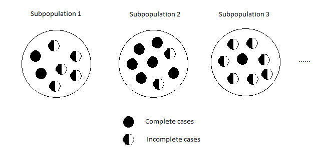
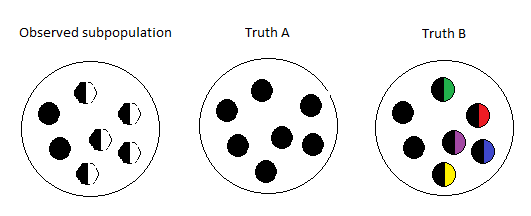
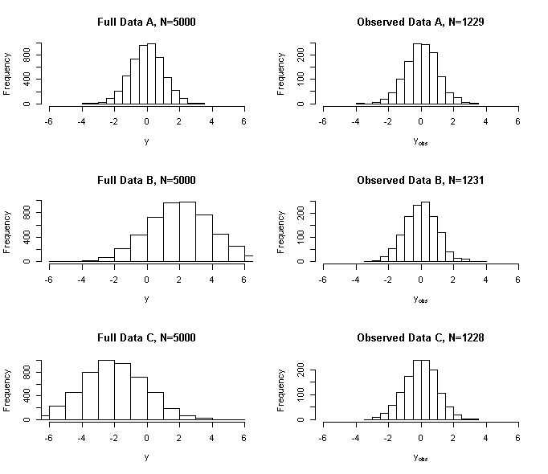

1.1 Motivating examples
The central problem of missing-data analysis is to learn about a population from a selectively observed version of it. A computational method is useful only after we have established the connection between the distribution of the recorded data and the quantity we want to estimate. This chapter develops that connection before introducing the main methods used throughout the course.
We will repeatedly distinguish three objects: the full data that define the scientific question, the observed record available to the analyst, and the mechanism linking the two. The motivating studies below illustrate that missingness can affect covariates, outcomes, or entire sequences of measurements. Their common mathematical structure is more important than their different scientific settings.
Missing observations arise throughout applied statistics, from incomplete measurements and survey nonresponse to loss to follow-up in longitudinal studies. The same mathematical problem also appears when a variable is latent by design, as with random effects, unobserved class membership, or potential outcomes in causal inference. In both settings, the recorded data reveal only part of the information that defines the scientific question. Discarding incomplete observations can change the population represented by the analysis, while treating reconstructed values as known can understate uncertainty. The task is therefore to model the relation between what could have been observed and what was actually recorded.
Missing covariates in the Six-Cities study
The Six-Cities study of respiratory health in children illustrates missingness in regression predictors (Ware et al., 1984). The response is a child’s wheezing status at age 11, modeled using city of residence and maternal smoking. The city indicator \(x_1\) equals one for Kingston-Harriman, Tennessee, the more polluted city in this comparison, and zero for Portage, Wisconsin. Maternal smoking, denoted by \(x_2\), is measured as the number of cigarettes smoked per day. Both predictors are relevant to the association of interest, so missing predictor values affect which children can contribute to a conventional complete-case regression.
The covariate \(x_2\) is maternal cigarette smoking measured in number of cigarettes per day. There are \(n = 2394\) subjects in the dataset. The covariate \(x_1\) is missing for 32.8% of the cases, and \(x_2\) is missing for 3.3% of the cases.
| \(y\) | \(x_1\) | \(x_2\) | |||||
| 0 | \(N=1827\)(76.3%) | 0 | \(N=862\)(36.0%) | Obs’ved | mean 7.2 (s.d. 11.3) | ||
| 1 | \(N=567\)(23.7%) | 1 | \(N=747\)(31.2%) | NA | \(N=79\)(3.3%) | ||
| NA | \(N=785(32.8\%)\) | ||||||
Consider data on \(n = 191\) patients from two Eastern Cooperative Oncology Group clinical trials, EST 2282 (Falkson et al., 1990) and EST 1286 (Falkson et al., 1994). Here, we are primarily interested in the patient’s status as he/she enters the trials. In particular, we are interested in how the number of cancerous liver nodes (y) when entering the trials is predicted by six other baseline characteristics: time since diagnosis of the disease in weeks (\(x_1\)), two biochemical markers (each classified as normal or abnormal): Alpha fetoprotein (\(x_2\)), and Anti Hepatitis B antigen (\(x_3\)); associated jaundice (yes, no) (\(x_4\)), body mass index (\(x_5\)) (defined as weight in kilograms divided by the square of height in meters), and age in years (\(x_6\)).
Table 1.2 shows that 28.8% of the patients have at least one covariate missing. The biochemical marker Anti-hepatitis B antigen, which is not easy to obtain, has the highest proportion missing.
| Variable | Missing \(N(\%)\) |
|---|---|
| Time Since Diagnosis | 17 (8.9%) |
| Alpha Fetoprotein | 11 (5.8%) |
| Anti Hepatitis B | 35 (18.3%) |
| Overall | 55 (28.8%) |
Missing outcomes and covariates in a longitudinal trial
The E1694 phase III melanoma trial compared interferon treatment with a GMK vaccine and collected quality-of-life measurements from 364 participants. The illustrative analysis excluded 54 participants who died before all four planned measurements could be taken. Quality of life after death is not an ordinary unrecorded measurement, and outcomes among participants who survive may differ substantially from those among participants who die. These exclusions therefore define the cohort being analyzed; within that restricted cohort, the remaining missing measurements are not attributed to death. This distinction between the target population and the subsequent observation process is essential when interpreting the example.
We also removed 33 cases that had all four QOL measurements missing, so there are 277 observations in the data set, and the total QOL score is missing at least once for 118 of them (42.6%). The total fraction of missing QOL data is 19.0%.
| Number of missing | |
| QOL measurements | \(N(\%)\) |
| 0 | 159 (57.4%) |
| 1 | 59 (21.3%) |
| 2 | 25 (9.0%) |
| 3 | 34 (12.3%) |
The covariates of interest include an indicator variable for treatment (HDI vs GMK), sex (0 for female and 1 for male), age, ulceration of the primary tumor (0 for no and 1 for yes), and a dichotomous variable for Breslow thickness of the primary tumor (0 for \(<\) 3.00 mm and 1 for \(\geq\) 3.00 mm). Ulceration is missing for 56 cases (20.2%) and Breslow thickness is missing for 49 cases (17.7%). Overall, 163 cases (58.8%) have either a missing longitudinal outcome and/or a missing baseline covariate.
1.2 The observed-data likelihood
Write the full observation as \(Y=(Y_{\mathrm{obs}},Y_{\mathrm{mis}})\), where \(Y_{\mathrm{obs}}\) denotes the component always recorded in the two-pattern setting and \(Y_{\mathrm{mis}}\) denotes the component that may be unavailable. Let \(R=1\) when the full observation \(Y\) is recorded and \(R=0\) when only \(Y_{\mathrm{obs}}\) is recorded. The density \(p_Y(y;\theta)\) specifies the full-data model, with \(\theta\) the parameter of interest. If every component were observed, this density would supply the likelihood directly. An incomplete record instead requires a likelihood for the values and observation pattern actually available, which means averaging over the compatible unobserved values.
The actual observation can be written as \(O=(R,Y_{\mathrm{obs}},RY_{\mathrm{mis}})\). Here \(RY_{\mathrm{mis}}\) is a recording convention; it does not assert that a missing measurement equals zero. The likelihood must describe the distribution of this entire record, including its observation pattern. Integrating over compatible missing values is the source of both the computational difficulty and the identification questions developed below.
Denote
which describes the missing data mechanism given the full data, and let \(\overline\pi(y)=1-\pi(y)\). If \(Y_{\mathrm{mis}}\) is missing, that means \(R=0\) and \(Y_{\mathrm{obs}}\) is observed. So the likelihood for the observed data \((R=0, Y_{\mathrm{obs}})\) is
where \(y=(y_{\mathrm{obs}},y_{\mathrm{mis}})\) and \(\nu\) is some dominating measure for \(Y_{\mathrm{mis}}\). Proper inference on \(\theta\) hinges on the missing data mechanism \(\pi\).
For one observation, the full observed-data contribution can be written as
For discrete variables the integral is a sum. A missing record is informative about its observed components and about its observation pattern. Neither contribution disappears merely because a value is unavailable.
Three familiar missingness assumptions place different restrictions on this observation probability. Under missing completely at random (MCAR), \(R\perp Y\): observation is independent of every component of the full data. Under missing at random (MAR), \(R\perp Y_{\mathrm{mis}}\mid Y_{\mathrm{obs}}\): the probability can depend on recorded values, but carries no additional dependence on the unrecorded component once those values are held fixed. Not missing at random (NMAR) allows that additional dependence. The categories describe relationships between random variables, rather than the visual arrangement of empty entries in a dataset. The following sections examine their consequences for likelihood inference and complete-case analysis.
1.3 MCAR and complete-case analysis
Missing completely at random is the strongest of the three mechanisms. Under MCAR, retaining complete cases is equivalent to random subsampling. This explains the validity of a complete-case estimator under standard full-data conditions, but does not imply that it uses all the information in the sample. Partially observed records may still inform marginal means, covariate distributions, or other components of the model.
Under MCAR, the observation probability is constant: \(\pi(y)=\pi_0\). For an incomplete record, that constant factors out of the likelihood, giving
Here \(p_{\mathrm{obs}}(y_{\mathrm{obs}};\theta)\) is the marginal density of the recorded component,
Independent accidental losses, instrument failures, or data-management errors can fit this model when their occurrence is unrelated to the study variables. A participant moving away has the same interpretation only under that independence assumption. The defining property is the constant observation probability, as if a separate coin toss determined whether each full record was retained.
In a random sample of \(n\) subjects, a complete case is a subject for whom \(R_i=1\), so that the whole vector \(Y_i\) is observed. A complete-case analysis discards the other subjects and applies a familiar full-data procedure to the retained observations. For maximum likelihood, this gives the criterion
Its simplicity is attractive, but its validity depends on the distribution of the retained sample. Under MCAR, selection is independent of the full observation, so the retained subjects form a random subsample. Outside that setting, the target of the complete-case likelihood needs to be examined rather than assumed.
CC analysis is perhaps the easiest thing to do with missing data, especially when the missing proportions are small. It is the default implementation in most statistical packages. Under MCAR, the complete cases are indeed a random sample. Therefore, the CC analysis is valid, though statistically inefficient as a result of tossing the information contained in the incomplete cases. To gather all information contained in the observed sample, we can use MLE based on all observed data with log-likelihood
But \(p_{\mathrm{obs}}(y_{\mathrm{obs}};\theta)\) may not have a simple or closed form.
1.4 MAR and ignorability
MAR is a conditional independence statement. Selection can alter the marginal composition of the observed sample while leaving the conditional distribution of missing components, given the always-observed components, unchanged. It is therefore essential to separate two questions: whether the observation mechanism can be omitted from a likelihood, and whether incomplete subjects can be omitted from an analysis. MAR can justify the first under additional conditions, but generally does not justify the second.
For likelihood ignorability, the data-model parameter and the missingness-model parameter must be distinct: their parameter space factors into a Cartesian product. In Bayesian inference, the corresponding prior factorization is also needed. These qualifications explain the proportionality in the calculation that follows.
Under MAR, write \(\pi(y)=\pi(y_{\mathrm{obs}})\) and \(\overline\pi(y_{\mathrm{obs}})=1-\pi(y_{\mathrm{obs}})\). The missingness probability is constant with respect to the variable being integrated out, so the incomplete-record likelihood factors as
The final proportionality concerns the candidate data-model parameter \(\theta\). It is justified when the missingness factor does not restrict or depend on that parameter, as formalized by parameter distinctness. Thus the observed-data density retains the information relevant to \(\theta\) even though observation probabilities can differ across recorded covariate values.
MAR allows the chance of observation to vary across recorded covariate values. It therefore permits selective observation while preserving a conditional relationship: within levels of the observed information, the mechanism does not further select on the missing component. Under the parameter-distinctness conditions used above, this yields likelihood ignorability, and the corresponding prior factorization gives Bayesian ignorability. The same argument includes MCAR as a special case. Complete-case analysis asks a different question, however. Its marginal sample composition may be altered under MAR, so ignorability of the mechanism does not in general justify discarding incomplete records.
Let \(Y_1\sim N(\mu+\theta,1)\), \(Y_2\sim N(\mu, 1)\), and \(Y_1\perp\!\!\!\perp Y_2\). Suppose we want to make inference on \(\theta\). Suppose \(Y_2\) is always observed and \(Y_1\) is possibly missing (indicated by \(R=0\)), with probabilities that depend on \(Y_2\). This is a case of MAR. With a random sample of \((R_i,R_i Y_{1i},Y_{2i})\) \((i=1,\cdots,n)\), the CC analysis based on the MLE is
Show that \(\widehat\theta^{CC}_n\) is consistent for \(\mu+\theta-E(Y_2\mid R=1)\) \(E(Y_2\mid R=1)\) need not be equal to \(\mu\).
To verify the displayed probability limit, apply the law of large numbers separately to the numerator and denominator of each complete-case mean. For any integrable \(V\),
Here \(Y_1\) is independent of \(Y_2\), and selection depends only on \(Y_2\). Consequently \(E(Y_1\mid R=1)=\mu+\theta\), whereas \(E(Y_2\mid R=1)\) need not equal \(\mu\). Their difference has the limit stated above. This is selection bias in the marginal contrast, even though the conditional missingness assumption is MAR.
These are special cases when CC analysis for certain parameters is valid even under MAR. In a regression model, for instance, let \(p(y\mid x;\theta)\) be the conditional density of \(Y\) given \(X\), where \(\theta\) is the regression parameter. The full data likelihood is
where \(\eta\) is the density of \(X\). When the response \(Y\) is missing, with probabilities possibly dependent on \(X\), the observed data likelihood is
which has nothing to do with the regression parameter. All information about \(\theta\) is contained in the complete cases.
1.5 Nonignorable missingness
NMAR allows \(\pi(y)\) to depend on both \(y_{\mathrm{obs}}\) and \(y_{\mathrm{mis}}\). The response-mechanism factor then remains inside the integral in (\(\ref{eq:obs_lik}\)), preventing the simplification used under MAR. In a longitudinal quality-of-life study, for example, dropout may depend on an unrecorded deterioration in health even after recorded history is taken into account. In a survey, willingness to answer may depend on the answer itself, perhaps because of perceived stigma. These examples motivate explicit models for dependence on missing values, but the scientific setting must determine which dependencies are plausible.
Under nonignorable missingness, inference generally requires additional restrictions on how the missingness probability depends on the unavailable values. Different choices can agree closely on the distribution of the observations yet imply different distributions for the missing outcomes. Estimates and tests may therefore be sensitive to assumptions that the data cannot verify on their own. This is why sensitivity analysis is central to NMAR problems, and why the next step is to distinguish computational difficulty from the more fundamental issue of identifiability.
1.6 Identifiability and positivity
Identification is a population property, preceding both estimation and sample size. Imagine knowing the observed-data distribution exactly. If more than one full-data model remains compatible with it and those models disagree about the target, the target is not identified. Increasing the sample size reduces sampling error but cannot select between observationally equivalent explanations.
The positivity assumption used below supplies information at every relevant value of the observed component. It does not require a large observation probability. Nevertheless, probabilities close to zero create an important distinction between formal identification and practically precise estimation.
Generally, a parameter is said to be identifiable with the data if it uniquely indexes their distribution, that is, one distribution of the data corresponds to one and only one value of the parameter. In other words, there do not exist two parameters that give rise to the same distribution. Mathematically, let \(p_Y(y;\theta)\) be the model for the density function of \(Y\) indexed by \(\theta\). Then, \(\theta\) is identifiable if
implies \(\theta_1=\theta_2\).
The importance of identifiability is evident. Since we can only infer about the distribution from the data, if the parameter is not uniquely linked to the distribution, the obtained information about the distribution cannot be carried on to the parameter. So the problem of making inference on the parameter would be ill posed. A simple example of unidentifiable parameters is the over-parameterized model
All pairs of \(\mu_1\) and \(\mu_2\) would have given rise to the same distribution of \(Y\) as long as their sum is the same.
Missing data introduce two layers of identification. First, the full-data model \(p_Y(y;\theta)\) must distinguish the parameter values of interest; this question exists even before anything is missing. Second, coarsening \(Y\) to \(Y_{\mathrm{obs}}\) may remove information that was needed for that distinction. The first layer is model-specific. Our concern here is the second: under what conditions does an identifiable full-data model remain identifiable from the observed records? Separating the layers prevents a computational method or a missingness assumption from being credited with information that the underlying model never supplied.
Under the assumption of MAR, if there is a positive probability of observing the full data given any values of the observed data, then identifiability with coarsened data is the same as that with full data.
Proposition 1.1 (Identifiability under MAR). Under MAR, denote \(\pi(Y_{\mathrm{obs}})=\operatorname{Pr}(R=1\mid Y)\), and suppose
\[\begin{equation}\tag{1.2}\label{eq:positivity} \pi(Y_{\mathrm{obs}})>0 a.s..\end{equation}\]If \(\theta\) is identifiable with the full data \(Y\) with density \(p_Y(y\mid \theta)\), then it is identifiable with the coarsened data \((R,Y_{\mathrm{obs}}, RY_{\mathrm{mis}})\).
To see why the assumption of MAR and the positivity condition (\(\ref{eq:positivity}\)) would help preserve identifiability from full to coarsened data, it is useful to think of the whole population as divided into subpopulations based on the values of the observed data. Let \(y_{\mathrm{obs}}^{(1)}, y_{\mathrm{obs}}^{(2)}, y_{\mathrm{obs}}^{(3)}, \cdots\), be the possible values of \(Y_{\mathrm{obs}}\). The \(k\)th subpopulation consists of subjects with \(Y_{\mathrm{obs}}=y_{\mathrm{obs}}^{(k)}\). Because of the MAR assumption, the missingness mechanism within each subpopulation is completely random. Because of the positivity condition (\(\ref{eq:positivity}\)), there is always a probabilistically (positive) fraction of complete cases in each subpopulation. The lost information contained in the incomplete cases can thus be inferred from complete cases, so the composition of each subpopulation can be reconstructed.
{kind=link}

Because the composition of the whole population by each of the subpopulation is certainly observable (because the partition is based on the observed data), all aspects about the composition of the whole population are preserved. Therefore, the coarsened data are as good as the full data in terms of identifiability.
A formal proof of Proposition 1.1 can go along the following lines. Under MAR, the density of \((R,Y_{\mathrm{obs}},RY_{\mathrm{mis}})\) is
First note that \(\pi\) is identifiable (since it pertains to a conditional distribution of the observed data). Given \(\theta_1\) and \(\theta_2\), set \(f(R=1,Y_{\mathrm{obs}},Y_{\mathrm{mis}};\theta_1,\pi)=f(R=1,Y_{\mathrm{obs}},Y_{\mathrm{mis}};\theta_2,\pi)\). We have
Use the positivity condition (\(\ref{eq:positivity}\)) to cancel out \(\pi(Y_{\mathrm{obs}})\). The result follows from the identifiability of \(\theta\) in \(p_Y(Y;\theta)\).
The proof also clarifies why the always-observed component is indispensable. Its marginal distribution is available from all subjects, while the complete cases reveal the conditional distribution of the remaining component within each stratum. Integrating those conditional distributions against the correct marginal distribution reconstructs the full-data law. This argument concerns identification, not equality of statistical information: observing everyone fully would ordinarily permit more precise estimation.
1.7 What cannot be learned without assumptions
On the other hand, NMAR does not preserve identifiability. Because without the assumption that the complete cases are a representative sample of the (sub)population, information contained in the missing values cannot be inferred from the observed ones and is thus irredeemably lost. So under NMAR, some aspects of the distribution of full data will become unidentifiable. More importantly, whether the missing mechanism is MAR or NMAR cannot be identified from the data. That is, for a MAR situation, there exists an NMAR situation that could have given rise to the same observed data as the MAR one.
Use the Subpopulation 1 in Figure 1.1 as an illustration (See Figure 1.2). It could be that all the half-filled circles are all black, like the observed ones, and the missing pattern is completely at random with probability \(5/7\) (a scenario of MAR). But it also could be that the half-filled circles had all sorts of different colors, and were set to missing if they were non-black (a scenario of NMAR). Both situations could have generated the observed data. Neither is more or less plausible than the other per the observed data.
{kind=link}

Here is a simple example for the non-identifiability under NMAR. Let \(Y\sim \mbox{Binomial}(1, \theta)\) and suppose we have an iid sample of \(Y\) except that some observations are missing (indicated by \(R=0\)). The interest is in making inference on \(\theta\). Denote \(p_{yr}=\operatorname{Pr}(Y=y, R=r)\) \(y=1,0\), \(r=1, 0\).
| \(R\) | |||
| 1 | 0 | ||
| \(Y\) | 1 | \(p_{11}\) | \(p_{10}\) |
| 0 | \(p_{01}\) | \(p_{00}\) | |
We can only observe the \(Y_i\) with \(R_i=1\), that is, the counts in the two cells of the left column in Table 1.4. So without any assumptions on the missing mechanism, we can only identify (gain information about) \(p_{11}\) and \(p_{01}\) from the observed data. Since \(\theta=p_{11}+p_{10}\) and \(p_{10}\) is not identifiable, \(\theta\) is no identifiable.
Exercise 1.1.
Given the distribution of the observed data, i.e., fixing up \(p_{11}\) and \(p_{01}\), specify the range of possible \(\theta\).
For each possible \(\theta\) in that range, express the missing data mechanism \(\pi_y:=\operatorname{Pr}(R=1\mid Y=y), y=1,0\), in terms of \(p_{11}\), \(p_{01}\), and \(\theta\).
Under MAR, show that \(\theta\) is identifiable by expressing it as an explicit function of \(p_{11}\) and \(p_{01}\).
Working through the binary identification exercise
Let \(a=p_{11}\) and \(b=p_{01}\). The observed law fixes \(a\), \(b\), and the missing probability \(1-a-b\), but cannot divide that last probability between \(Y=1\) and \(Y=0\). Since \(\theta=a+p_{10}\),
Every value in this interval is attainable. For an interior value, take
At boundary values, conditionals on zero-probability events can be assigned arbitrarily. In this example there are no always-observed covariates, so MAR reduces to independence of \(R\) and \(Y\). Setting \(\pi_1=\pi_0\) gives
provided \(a+b>0\). The same data therefore yield either an interval of possible values or a point, depending on the assumption supplied.
All (non-)identifiability talked about so far is nonparametric identifiability. Under NMAR, when parametric models are specified for the missing data mechanism (selection models) and for the sampling distribution, the parameters may be identifiable. So may the MAR assumption. For example, let \(Y\sim N(\mu,\sigma^2)\) and assume a logistic selection model
This parametric restriction can supply identifying information, but it does not imply global identifiability without additional conditions. The counterexample below makes this qualification explicit.
In fact, though the MAR assumption is not testable nonparametrically, one can posit parametric selection models in which MAR is identifiable and testable. Thus to check the MAR assumption, one can compare the analysis results under MAR and under NMAR with the parametric selection model and see how things differ. This is called sensitivity analysis. Marked differences show that the conclusion is sensitive to the alternative assumptions; they do not by themselves reject MAR. A lack of difference, however, does not verify the MAR assumption. It just means that the assumption is not sensitive to that particular selection model.
Exercise 1.2. With the selection model (\(\ref{eq:logit}\)), investigate identifiability using the observed data likelihood \[\begin{aligned} \operatorname{Pr}(Y=y,R=r)&=\left\{\frac{e^{\psi_0+\psi_1y}}{1+e^{\psi_0+\psi_1y}}\sigma^{-1}\phi\left(\frac{y-\mu}{\sigma}\right)\right\}^r\\ & \times\left\{\int\frac{1}{1+e^{\psi_0+\psi_1y}}\sigma^{-1}\phi\left(\frac{y-\mu}{\sigma}\right)dy\right\}^{1-r}, \end{aligned}\] where \(\phi\) is the density of the standard normal distribution.
A qualification for normal outcomes with logistic selection
The unrestricted normal-logistic model in the original exercise is not globally identifiable. Let \(f_{\mu,\sigma}(y)\) be a normal density and let \(s(t)=e^t/(1+e^t)\). Exponential tilting gives
When \(a+b\mu+b^2\sigma^2/2=0\), it follows that
For \(b\ne0\), these are different parameter vectors with the same observed density for \(R=1\), and therefore the same probability for \(R=0\). A concrete example is \((\mu,\sigma^2,a,b)=(0,1,-1/2,1)\) versus \((1,1,1/2,-1)\). Thus the exercise should be read as an investigation of the additional restrictions needed for identification, not as an unconditional identification claim. See Miao, Ding, and Geng, Identifiability of Normal and Normal Mixture Models With Nonignorable Missing Data for a systematic treatment.
Exercise 1.3. Without the selection model (\(\ref{eq:logit}\)), show that the MAR assumption is not identifiable even with the normal assumption on \(Y\) by completing the following. Given \(\pi_0:=\operatorname{Pr}(R=1\mid Y=y)\) under MAR and \((\mu,\sigma^2)\), find a non-constant function \(\pi(y)\in [0,1]\) and \((\mu_1,\sigma_1^2)\) such that
\[\pi(y)\sigma_1^{-1}\phi\left(\frac{y-\mu_1}{\sigma_1}\right)=\pi_0\sigma^{-1}\phi\left(\frac{y-\mu}{\sigma}\right), \forall y\in\mathbb R.\]
1.8 Four routes to inference
The next four approaches differ in what they model and in how they handle uncertainty. Maximum likelihood integrates missing quantities out of the likelihood; EM is a way to carry out the resulting optimization. Multiple imputation integrates uncertainty operationally through repeated completed datasets. Fully Bayesian analysis targets the joint posterior of parameters and missing values. Weighted estimating equations instead adapt an unbiased full-data equation to the observed sample. None removes the need for identification assumptions.
We will discuss four common approaches to statistical inference with missing data. These are
Maximum Likelihood Estimation (MLE) by the Expecation-Maximization (EM) algorithm
Multiple Imputation (MI)
Fully Bayesian methods (FB)
Weighted Estimating Equations (WEE)
The first three methods are based on likelihoods. WEE is based on estimating equations and is closely associated with semiparametric inference. The focus of this course is on MLE (via the EM) and WEE, and we will be mostly concerned with data that are MAR.
1.9 Maximum likelihood and EM
The Expectation-Maximization (EM) algorithm (Dempster, Laird, and Rubin, 1977) is a general iterative algorithm that may be used to find MLEs in incomplete data problems. EM is most useful when maximization from the full data likelihood is straightforward while maximization based on the observed data likelihood is difficult. The basic idea of EM is to augment the data (likelihood) so that the observed data likelihood resembles a full data likelihood, so that it can be maximized using standard techniques.
Specifically, denote the full data of the whole sample as \(D\), the observed part of the sample as \(D_{\mathrm{obs}}\), and the missing part of the sample as \(D_{\mathrm{mis}}\). In the previously used notation, \(D=\{Y_i,i=1,\cdots,n\}\) and \(D_{\mathrm{obs}}=\{(R_i,Y_{\mathrm{obs},i},R_iY_{\mathrm{mis},i})\}\). Let \(l_n(\theta\mid D)\) denote the full data log-likelihood. The EM algorithm consists of an “E step” and an “M step”. The M step is especially simple to describe since it uses whatever computational methods that are appropriate in the full data case. That is, the M step performs maximum likelihood estimation of \(\theta\) using the “augmented” log-likelihood obtained from the E step. It treats this augmented log-likelihood as if it were a full data log-likelihood.
The E step computes the expected value of the full data log-likelihood given both the observed data and a current estimate of the parameters. E-Step: Let \(\theta^{(t)}\) be the current estimate of the parameter \(\theta\). The E step computes
Note that the conditional expectation is taken assuming \(\theta^{(t)}\) is the “true” parameter. In the iid case with two-levels of missingness under MAR,
where \(l(\theta\mid y)\) is the log-likelihood for a single observation of full data \(Y\).
Note that under MAR
So that the E-step pertains only to the sampling distribution of \(Y\) and has nothing to do with the selection model. M-Step: The M step computes \(\theta^{(t+1)}\) by maximizing the expected log-likelihood found in the E step:
These two steps are iterated until convergence.
Here is a toy example. Suppose the full data are iid \(Y_i\sim N(\theta, 1)\), \(i=1,\cdots, n\). Further assume that we observe the first \(m\) of them, and the remaining \(n-m\) observations are MCAR. The full data log-likelihood is, up to a constant,
We first do the M step. Set \(\frac{\partial}{\partial\theta}Q(\theta\mid \theta^{(t)})=0\). We have
So
Now, the E step amounts to computing
So the \((t+1)\)th iteration is
It is important that the E step averages the complete-data log likelihood, not the likelihood itself. Moreover, an expression nonlinear in a missing variable must be averaged as an expression. For example, \(E(Y^2\mid O)\) equals \(\operatorname{Var}(Y\mid O)+E(Y\mid O)^2\), not just the squared conditional mean. This distinction will determine the covariance updates in the bivariate example.
1.10 Multiple imputation
The technique of multiple imputation involves creating multiple “full” datasets by filling in values for the missing data. Then, each filled-in dataset is analyzed as if it were a full dataset. The inferences for the filled-in datasets are then combined into one result, by averaging over the filled-in datasets. The most popular way of doing MI is to sample from a posterior predictive distribution under the Bayesian framework. MI is a proper imputation technique in the sense that the uncertainty contained in the missing values are acknowledged by creating multiple full datasets.
Improper imputation techniques involve ad-hoc ways of filling in the missing values, such as substituting the sample mean, fitted values, or other values. Some improper imputation techniques include: hot deck imputation, where recently recorded units in the sample are substituted for the unobserved values, mean imputation, where means from sets of recorded values are substituted; and regression imputation, where missing values for a subject are filled in by predicted values from the regression on the known variables for that subject. Proper imputation such as MI has a solid theory and leads to valid large sample inferences for the parameters, whereas improper imputation does not.
The basic idea behind MI is as follows:
Construct \(K\) “full” datasets by inserting in the missing values drawn from a Bayesian posterior predictive distribution;
Obtain \(\widehat\theta^{(k)}\) for the \(k\)th imputed dataset, \(k = 1, . . . , K\).
The parameter estimate is \(\widehat\theta=K^{-1}\sum_{k=1}^K\theta^{(k)}\).
To compute the variance estimate, let \(\widehat V^{(k)}\) denote the variance estimate from the \(k\)th imputed full dataset, obtained by, e.g., the inverse information matrix.
Compute Within imputation variation: \(\overline V=K^{-1}\sum_{k=1}^K\widehat V^{(k)}\) Between imputation variation: \(\widehat B=K^{-1}\sum_{k=1}^K(\widehat\theta^{(k)}-\widehat\theta)^{\otimes 2}\) where \(a^{\otimes 2}=aa^{\mathrm{T}}\) for any vector \(a\).
The variance of \(\widehat\theta\) is given by
\[\widehat V^{MI}=\overline V+(1+K^{-1})\widehat B.\]
The between-imputation variation measures how much the answer changes across plausible completions of the missing data. Averaging the complete-data standard errors alone misses this source of uncertainty. Chapter 5 develops the pooling formula, its finite-imputation correction, and the distinction between proper predictive draws and repeated draws with parameters fixed at an estimate.
1.11 Fully Bayesian inference
Fully Bayesian methods for missing data involve specifying priors on all of the parameters. The missing values as well as the parameters are then sampled from their respective posterier distributions via the Gibbs sampler. FB with missing values only involves the incorporation of an extra layer in the Gibbs steps compared to the full data case. The fundamental reason for this conceptual simplicity is that the Bayesian framework sees no difference between data and parameter by treating both as random variables. Thus, Bayesian methods can easily accommodate missing data without requiring extra modeling assumptions or new techniques for inference.
To describe the basic framework, let \(L(D\mid \theta)\) denote the full data likelihood, and let \(q(\theta)\) denote prior for \(\theta\). Our goal is to make inferences with the posterior distribution of \(\theta\) based on the observed data. To that end, we conduct the following steps iteratively by Gibbs sampling (we use \(p(A\mid B)\) as a generic notation for the conditional distribution of \(A\) given \(B\)):
Draw \(D_{\mathrm{mis}}\) from \(p(D_{\mathrm{mis}}\mid \theta, D_{\mathrm{obs}})\)
Draw \(\theta\) from \(p(\theta\mid D_{\mathrm{obs}},D_{\mathrm{mis}})\), where \(D_{\mathrm{mis}}\) is from the previous draw.
Both \(p(D_{\mathrm{mis}}\mid \theta, D_{\mathrm{obs}})\) and \(p(\theta\mid D)\) are proportional to
So, techniques such as Metropolis-Hastings algorithm can be used in each sampling step. By Gibbs sampling theory, after a period of “burn-in” iterations, the \(\theta\)s thus drawn eventually follow \(p(\theta\mid D_{obs})\).
1.12 Weighted equations and causal inference
The likelihood route begins with a distribution. The estimating-equation route begins with an identity, \(E\{m(Y;\theta_0)\}=0\). For example, \(m(Y;\mu)=Y-\mu\) characterizes a mean without specifying a full distribution. Selection generally destroys the zero expectation in the complete cases. Weighting restores it through an iterated-expectation argument, provided the selection probabilities are positive and correctly specified.
The weighted estimating equation approach starts with some existing estimating function based on the full data, say, \(m(Y;\theta)\). This estimating function is valid in the sense that \(Em(Y;\theta_0)=0\), where \(\theta_0\) is the true value of \(\theta\). An example of estimation functions is the score function in a parametric model. With full data, the estimating equation is
where the root \(\widehat\theta_n\) can be calculated by the Newton-Raphson algorithm.
By Z estimation theory, \(\widehat\theta_n\) is consistent and asymptotically normal, whose variance can be estimated by
where \(\dot m(y;\theta)=\frac{\partial}{\partial\theta}m(y;\theta)\) and \(a^{\otimes 2}=aa^{\mathrm{T}}\) for any vector \(a\). With incomplete data, applying the full-data estimation function to the complete cases (CC analysis) may lead to bias because the complete cases need not be a random sample of the population. That is to say, the estimating equation
is generally invalid unless the data are MCAR.
To correct for the non-representativeness of the complete cases, each case is be inversely weighted by its selection probability. Assume MAR and let \(\pi(Y_{\mathrm{obs}})=\operatorname{Pr}(R=1\mid Y)\). The inverse probability weighted (IPW) estimating equation is
The IPW estimating function is valid because
The selection probability (propensity score) \(\pi(Y_{\mathrm{obs}})\) is typically unknown. In that case, a parametric model \(\pi(Y_{\mathrm{obs}};\psi)\) can be built. An estimator \(\widehat\psi_n\) can be found by MLE using the data \((R_i,Y_{\mathrm{obs},i}), i=1,\cdots,n\). Then, the estimated selection probabilities from the parametric model are inserted into the IPW estimating equations:
The WEE approach is very useful in causal inference under the counter-factual framework. Suppose each subject could be subject to either treatment or control, indicated by \(W=1\) and \(0\), respectively. The outcome is denoted as \(Y(w)\) had the subject been assigned to group \(w\), \(w=0,1\). So, each subject has two potential outcomes The average causal treatment effect is defined as
However, only the outcome associated with the treatment group to which the subject is actually assigned is observed, i.e., \(Y=WY(1)+(1-W)Y(0)\). So, this is a missing data problem.
As in any missing data problem, the missingness mechanism, or the treatment assignment mechanism, is very important to the inference. In completely randomized experiments, the difference of unweighted averages is a valid estimator fo the average causal treatment effect:
In observational studies, it is not realistic to assume that the assignment mechanism is completely random. Let \(Z\) denote a set of pre-treatment variables on which the treatment assignment may depend.
We further make the standard assumption that the potential outcomes are independent of treatment assignment given the pre-treatment variables:
This assumption basically says there is no unmeasured confounders for the relationship between potential outcomes and treatment assignment. It corresponds to MAR in missing data terminology.
Similar to the general missing data case, we can use the following IPW estimator for the average causal treatment effect:
where \(\pi(Z;\psi)=\operatorname{Pr}(W=1\mid Z)\) is a model for the propensity score, and \(\psi\) can be estimated based on the data \((W_i, Z_i), i=1,\cdots, n\).
Exercise 1.4. Show that (\(\ref{eq:ipwate}\)) is unbiased for the average causal treatment effect (assuming \(\psi\) is at its true value).
The causal interpretation additionally requires consistency, so that the recorded outcome equals the potential outcome under the received treatment, and positivity, \(0<P(W=1\mid Z)<1\) almost surely on the target population. Under conditional exchangeability,
The analogous calculation for \((1-W)Y/\{1-\pi(Z)\}\) yields \(E\{Y(0)\}\). Subtracting proves unbiasedness with the true propensity score. Replacing it with an estimated score generally gives consistency under regularity conditions, not exact finite-sample unbiasedness.
1.13 A bivariate normal case study
Here is hypothetical example: UW-Madison Division of Recreational Sports offered a one-semester fitness program designed to help participants lose weight. To assess how this program is doing, they randomly selected 100 participants and measured their BMI values at enrollment and after completion of the program. The aim is to see how the average BMIs change before and after treatment. However, some of recruits did not go through the training program, so their post-treatment BMI value is missing. We assume that the decision for non-compliance depends solely on the pre-treatment BMI. So the post-treatment BMI is MAR.
To put the question into statistical framework, the full data consist of a bivariate outcome \((Y_1, Y_2)\) with \(Y_2\) possibly missing. So the observed data consist of
The aim is to estimate \(EY_1-EY_2\). Since we can certainly estimate \(EY_1\) by the sample average of fully observed \(Y_1\), we focus on the estimation of \(EY_2\).
The bivariate normal example ties the methods together. The EM calculation estimates both the mean vector and covariance matrix by reconstructing conditional first and second moments. The fully observed first component anchors its own marginal parameters. Only the parameters involving the second component require the missing-data calculation. The normal-distribution identities needed for every step are derived in the mathematical supplement at the end of this chapter.
We first consider MLE using the EM algorithm. In that case we need to have a model for the full data \((Y_1, Y_2)\). Assume that
Denote \(\theta=(\mu,\Sigma)\). From here on, for simplicity in describing the algorithms, we use small-case letters to denote the iid sample
We first look at the M step. Under mild regularity conditions (which hold in this case),
So that the M step amounts to solving the conditional expectation of the score function. By A1.2, the M step can be explicitly expressed as
where \(a^{\otimes 2}=aa^{\mathrm{T}}\) for any vector \(a\).
The E step evaluates the conditional moments required by this update. Since all \(y_1\) belong to \(D_{\mathrm{obs}}\), we have that
Using the conditional expectation formula given in A1.2.3, we have
where \(\widehat y_{2i}^{(j)}=y_{2i}\) if \(r_i=1\) and \(\widehat y_{2i}^{(j)}=\mu_2^{(j)}+\sigma_{12}^{(j)}{\sigma_{11}^{(j)}}^{-1}(y_{1i}-\widehat\mu_1)\) if \(r_i=0\).
For \(\Sigma^{(j+1)}\), note that
The \((1,1)\)th term is constant under the conditional expectation. The \((1,2)\)th term is linear in \(y_{2i}\), so its conditional expectation is to replace \(y_{2i}\) with \(\widehat y_{2i}^{(j)}\).
The conditional expectation of the \((2,2)\)th term is \(\left(y_{2i}-\mu_2^{(j+1)}\right)^2\) if \(r_i=1\) and is \(\sigma_{2\mid 1}^{(j)}+\left(\widehat y_{2i}^{(j)}-\mu_2^{(j+1)}\right)^2\), where \(\sigma_{2\mid 1}^{(j)}=\sigma_{22}^{(j)}-{\sigma_{12}^{(j)}}^2{\sigma_{11}^{(j)}}^{-1}\). Denote this term as \(\widehat V_{2i}^{(j)}\). Consequently,
In sum, to compute the MLEs, we first compute the non-iterative part:
At the \((j+1)\)th iteration with parameter \(\theta^{(j)}\), compute
Update \(\mu_2^{(j+1)}=n^{-1}\sum_{i=1}^n\widehat y_{2i}^{(j)}\) and
Then, compute
Update \(\sigma_{22}^{(j+1)}=n^{-1}\sum_{i=1}^n \widehat V_{2i}^{(j)}\). Note that this step is optional if we are only interested in estimating \(\mu_2\), because the iterative steps of \(\mu_2\) do not involve \(\sigma_{22}\).
An alternative factorization helps interpret the algorithm. Write \(Y_2=a+bY_1+\epsilon\) with \(E(\epsilon\mid Y_1)=0\). Under MAR, the complete cases consistently estimate this conditional regression. The full sample estimates \(E(Y_1)\). Hence \(E(Y_2)=a+bE(Y_1)\) combines information from both groups. In the unconstrained normal model, the likelihood factorization explains the connection between this regression calculation and the EM fixed point.
1.14 Weighting, augmentation, and double robustness
A nonparametric estimator for \(\mu_2:=EY_2\) with full data is \(n^{-1}\sum_{i=1}^nY_{2i}\). Under MAR, the CC estimator
is biased as \(R\) may be (marginally) correlated with \(Y_2\). We build a model for the selection probability \(\pi(Y_1;\psi)=\operatorname{Pr}(R=1\mid Y)\), say, logistic regression model, i.e.,
and estimate \(\psi\) by its MLE \(\widehat\psi\) based on \((R_i,Y_{1i}), i=1,\cdots,n\).
Then, a valid estimator for \(\mu_2\) is the inverse probability weighted (IPW) estimator
Compared with the MLE method, which needs a parametric model for the distribution of \(Y\), the IPW does not require such a model. However, the IPW requires a parametric model for the missingness mechanism. In this sense, the IPW is semiparametric.
Interestingly, there is a way to combine the strengths of the two approaches. First, let’s build a regression model for \(Y_2\) on \(Y_1\): \(\mu(Y_1;\beta)=E[Y_2\mid Y_1]\), e.g., a linear regression model
The parameter estimate \(\widehat\beta\) can be computed using least squares by the CC analysis on \(\{(Y_{2i}, Y_{1i}): R_i=1,i=1,\cdots, n\}\) (why is CC analysis valid here?).
Consider the following estimator
This estimator is doubly robust (DR) in the sense that it is valid when either the \(\pi\) model or the \(\mu\) model is correct. To see this, fixing \(\psi\) and \(\beta\) at their true values, one can show that the expectation of
is \(\mu_2\) when either model is true. See A1.3.
Still more interesting is the fact that when both models are correct, \(\widehat\mu_2^{DR}\) has smaller (asymptotic) variance than \(\widehat\mu_2^{IPW}\). A variety of DR semiparametric approaches have been developed to account for missing observations without making strict parametric assumptions. A general DR approach using weighted estimating equations has been proposed by Robins, Rotnitzky, and Zhao (1994). The general weighted estimating equations (Robins and Ritov, 1997) are doubly robust in the sense that, in order to obtain a valid estimate of the parameters, either the missing data mechanism or the conditional distribution of the missing data given the observed data, has to be correctly specified, but not both.
The algebra behind double robustness
Write \(m_0(x)=E(Y_2\mid Y_1=x)\) and \(\pi_0(x)=P(R=1\mid Y_1=x)\). For any candidate functions \(m\) and positive \(\pi\), define
Under MAR, conditioning on \(Y_1=x\) gives
The bias is therefore a product of two model errors. It vanishes if either candidate equals its true counterpart. When both are correct and the relevant second moments exist, the centered expression
has variance
This is the efficient influence-function variance for the unrestricted MAR mean problem. The efficiency comparison with ordinary IPW is most direct when the propensity score is treated as known. Estimated propensity scores require the nuisance-parameter calculation in Chapter 6; one should not infer a universal ranking of arbitrary implementations from double robustness alone.
The course now separates the computational and inferential threads. Chapters 2–5 develop likelihood and predictive methods in detail. Chapter 6 returns to weighting, influence functions, and the product-of-errors calculation above.
1.15 References
Dempster, A. P., Laird, N. M., & Rubin, D. B. (1977). Maximum likelihood from incomplete data via the EM algorithm. Journal of the Royal Statistical Society, Series B, 1-38.
Falkson, G., Cnaan, A., Simson, I. W., Dayal, Y., Falkson, H., Smith, T. J., & Haller, D. G. (1990). A randomized phase II study of acivicin and 4’deoxydoxorubicin in patients with hepatocellular carcinoma in an Eastern Cooperative Oncology Group study. American journal of clinical oncology, 13, 510-515.
Falkson, G., Lipsitz, S., Borden, E. Simson, I.W. & Haller, D. (1994) A ECOG ran domized Phase II study of beta Interferon and Menogoril. American Journal Of Clinical Oncology, 18, 287-292.
Robins, James M., Andrea Rotnitzky, & Lue Ping Zhao (1994). Estimation of Regression Coefficients When Some Regressors Are Not Always Observed. Journal of the American Statistical Association, 89, 846-866.
Robins, J. M. & Ritov, Y. A. (1997). Toward a Curse of Dimensionality Appropriate (CODA) Asymptotic Theory for Semi-Parametric Models. Statistics in Medicine, 16, 285-319.
Ware, J. H., Dockery, D. W., Spiro III, A., Speizer, F. E., & Ferris Jr, B. G. (1984). Passive Smoking, Gas Cooking, and Respiratory Health of Children Living in Six Cities 1-3. American Review of Respiratory Disease, 129, 366-374.
1.16 Mathematical supplement: normal models and double robustness
A closer look at Exercise 1.3
In the MAR case, assume without loss of generality that \(Y\sim N(0, 1)\). Then, the density of \((R, RY)\) is
where \(\pi_0=\operatorname{Pr}(R=1\mid Y)\).
We will find a case of NMAR that gives rise to the same observed-data density (\(\ref{add:eq:mar}\)). Given \(\rho\in(0,\pi_0^{-2}-1)\), let
Then, one can show that
where
Hence, the observed data \((R,RY)\) arising from \(Y\sim N(\mu^*,\sigma^{*2})\) and \(\operatorname{Pr}(R=1\mid Y=y)=\pi(y)\) have the same distribution as (\(\ref{add:eq:mar}\)). That is, based on a random sample of \((R, RY)\), one cannot differentiate the two potential cases:
MAR: \(Y\sim N(0, 1)\) and \(\operatorname{Pr}(R=1\mid Y)=\pi_0\);
NMAR: \(Y\sim N(\mu^*,\sigma^{*2})\) and \(\operatorname{Pr}(R=1\mid Y=y)=\pi(y)\).
Here’s a numerical example with \(\pi_0=0.25, \rho=3\) generated with R code:
set.seed(12345)
n=5000
pi0=0.25
rho=3
#specifying the parameters
sigmas=sqrt(1+rho)
sigma=sigmas/sqrt(rho)
mu=-sqrt(-2*log(sigmas*pi0)/rho)
mus=-rho*mu
#Population A: standard normal with MAR
fd0=rnorm(n,0,1)
obs0=fd0*rbinom(n,1,pi0)
yobs0=obs0[obs0!=0]
n0=length(yobs0)
#Population B; NMAR
fd1=rnorm(n,mus,sigmas)
piy=exp(-(fd1-mu)^2/(2*sigma^2))
obs1=fd1[rbinom(n,1,piy)==1]
n1=length(obs1)
#flip the signs
#Population C; NMAR
mu=-mu
mus=-mus
fd2=rnorm(n,mus,sigmas)
piy=exp(-(fd2-mu)^2/(2*sigma^2))
obs2=fd2[rbinom(n,1,piy)==1]
n2=length(obs2)
#sample sizes in the observed populations
n0;n1;n2
#plot
par(mfrow=c(3,2))
hist(fd0,xlim=c(-6,6),main="Full Data A, N=5000",xlab=expression(y))
hist(yobs0,xlim=c(-6,6), main="Observed Data A, N=1229",xlab=expression(y[obs]))
hist(fd1,xlim=c(-6,6),main="Full Data B, N=5000",xlab=expression(y))
hist(obs1,xlim=c(-6,6),main="Observed Data B, N=1231",xlab=expression(y[obs]) )
hist(fd2,xlim=c(-6,6),main="Full Data C, N=5000",xlab=expression(y))
hist(obs2,xlim=c(-6,6),main="Observed Data C, N=1228",xlab=expression(y[obs]) ){kind=link}

Some facts about the multivariate normal distribution
Let \(Y\sim N(\mu,\Sigma)\) be a \(p\)-dimensional multivariate normal (MVN) vector. The log-likelihood for an iid sample of \(Y\), denoted as \(y_i, i=1,\cdots, n\), is (up to a constant)
To derive the score functions for \(\mu\) and \(\Sigma\), we need some rules of operations.
Some rules of matrix operations
\(tr(AB)=tr(BA)\), where \(tr(A)\) is the trace (sum of all diagonal elements) of \(A\)
\(\frac{d}{dA}\log \det(A)=A^{-1\mathrm{T}}\), where \(\det(A)\) is the determinant of \(A\).
Score functions
Clearly,
where \(\overline y=n^{-1}\sum_{i=1}^ny_i\). Now, we derive the score function for \(\Sigma^{-1}\). Re-write the log-likelihood as
where \(a^{\otimes 2}=aa^{\mathrm{T}}\) for any vector \(a\). So,
With full data, the MLEs can be obtained by equating the score functions to zero:
Conditional expectations
Partition the components of \(Y\) by
By deriving the conditional density of \(Y_2\) given \(Y_1\), it can be found that
In particular,
Double robustness of \(\widehat\mu_2^{DR}\)
When \(\pi\)-model is correct:
We have
When \(\mu\)-model is correct:
In this case, denote
We have
DISCUSSION
Comments and questions
Share questions, corrections, and suggestions about this chapter or the book.